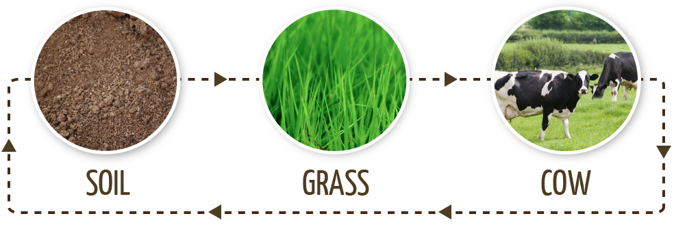
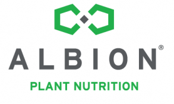
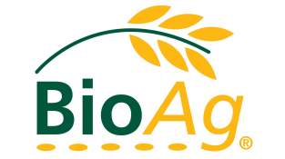

Call us: 01603 781 217
Email us: info@tandj.co.uk
Email us: info@tandj.co.uk
INTEGRATED NUTRITION

Profound relationships exist between the nutrition of soil, plants, farm animals and humans. At Thomson & Joseph we believe in adopting an integrated approach to nutrition which recognises and optimises these relationships. Soil, as the most important natural farm resource, is the starting point. We believe in analysing soil to provide customised soil improvement plans to help farmers improve soil fertility and unlock the high level of nutrient reserves. A healthy soil will support the growth of grass of high nutritive value, which in turn is beneficial to cow health and productivity.
Our Products & Services

Albion Plant Nutrition
Albion Plant Nutrition supplies Foliar Metalosates, a range of highly bioavailable crop micronutrients based on Albion's patented amino acid chelation concept.
Read More
SoyChlor
SoyChlor® is a Landus Cooperative pre-calving dietetic concentrate designed to assist pre-calving dairy cows with DCAB balancing and reducing instances of Hypocalcaemia, T&J are distributors of SoyChlor in the UK and Ireland.
Read More
Albion Laboratory Services
Albion Laboratory Services offer analysis of a comprehensive range of nutritionally essential mineral elements.
Read More

BioAg
BioAg soil and composting nutrient and liquid microbial cultures provide an immediate and ongoing supply of 'biologically active' nutrients directly to plants, as well as stimulating microbial activity in the soil.
Read More
Why choose us?
Experience...
Thomson & Joseph have over 68 years experience in customer service and the provision of agricultural, industrial chemical and pharmaceutical products. Over the years we have developed strong relations with international key producers including OCM, 5N Plus, Landus Cooperative, Albion Plant Nutrition and BioAg.
Qualifications...
Our team are highly qualified to provide support in the agricultural, chemical, pharmaceutical and biological fields. As a company we are accredited to ISO 9001:2015 quality assurance scheme, FACTS (Fertiliser Advisers Certification and Training Scheme) and FEMAS (Feed Materials Assurance Scheme). We have staff who are members of Society of Chemical Industry (SCI); British Society of Animal Science; British Nutritional Foundation; Nutrition Society; Society of Biology and the British Grassland Society.
Technical Support...
If you need to get in contact with us for technical support don't hesitate to call us on 01603 781217 or email us at info@tandj.co.uk.
Customer Care...
We are an independent business who pride ourserlves on our customer service, having been established in 1951 we have continued to maintain our strong and personal customer relationships. We have also been accredited to ISO 9001:2015 Quality Standard since 1994.
Latest News
T&J Reaches 70!
17/5/2021
Thomson & Joseph was established on 11th May 1951 and it’s still going strong today after ...
Christmas Opening Hours
16/12/2019
It's been a busy year here at T&J and we're all looking forward to the festive period!...
All News →